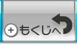
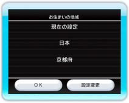

『Wiiの間』の画面で「その他」→「設定」の順に選んでください。
『Wiiの間』の各種設定を変更することができます。
15 |
設定を変更する |
 |
|
● 家族Miiの登録 『Wiiの間』に登場させるMiiを追加・削除したり、プロフィール（生まれた年や血液型）を変更することができます。 ※名前や誕生日を変更したり、新しいMiiを作成したりする場合は、似顔絵チャンネルで行ってください。 ● 映像の設定 映像の画質を設定します。 ● 地域と住所の設定 このWiiをお使いの地域の変更と、住所情報の登録・編集・削除ができます。 ・地域の設定 「設定変更」をポイントして ・住所の設定 お届けサービスの申し込みに必要な住所情報の登録・編集・削除や、暗証番号の設定・解除などができます（→P.22、23、24）。 ● Wiiの間について 『Wiiの間』の利用規約をご確認いただけます。 |
 |
 |
 |